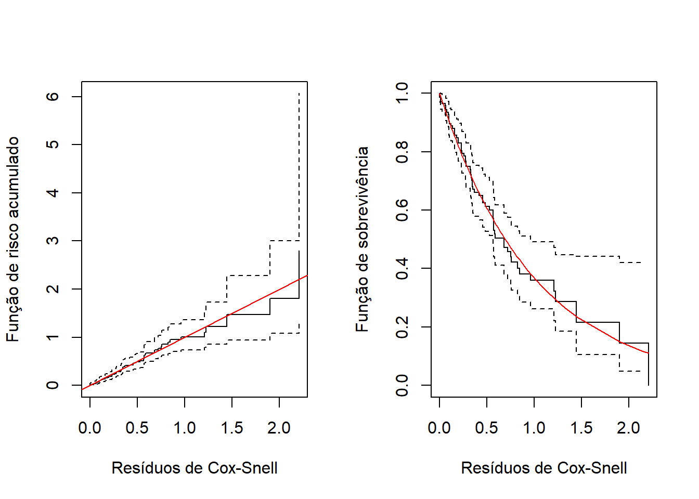

Código
require(flexsurv)
require(coin)
require(ggplot2)
require(qqplotr)Para esta quinta aula prática de Análise de Sobrevivência e Confiabilidade, precisaremos dos seguintes pacotes:
require(flexsurv)
require(coin)
require(ggplot2)
require(qqplotr)flexsurv: Responsável pelo ajuste de modelos paramétricos flexíveis aos Dados de tempo até a ocorrência de um evento de interesse.coin: Responsável pela realização do teste de Peto-Peto.ggplot2: Responsável pela gramática dos gráficos no R.qqplotr: Responsável pela realização qqplot.As Organizações Internacionais de Saúde recomendam o leite materno como única fonte de alimentação até os 6 meses de idade. Dessa forma, identificar os fatores associados ao aleitamento materno é fundamental para compreender o desmame precoce.
Diversos estudos apontam associação entre o aleitamento materno e fatores como:
Nesse contexto, os professores Eugênio Goulart e Cláudia Lindgren, do Departamento de Pediatria da UFMG, realizaram um estudo no Centro de Saúde São Marcos, em Belo Horizonte, ambulatório voltado principalmente para população de baixa renda.
Os principais objetivos do estudo foram:
Para isso, foi aplicado um inquérito epidemiológico a 150 mães de crianças menores de 2 anos.
No estudo:
A variável resposta é, portanto, o par \((t_i,\delta_i)\), com \(i=1,2,...,150\), de modo que:
As covariáveis explicativas são:
A base de Dados está armazenada no arquivo Aleitamento.csv
Os comandos a seguir fazem a leitura dessa base de Dados:
Dados<-read.csv("Aleitamento.csv")Como em qualquer análise estatística, é importante realizar uma boa análise descritiva dos Dados. Em análise de sobrevivência e confiabilidade, também podemos utilizar medidas resumo e gráficos, fazendo as adaptações necessárias para a presença de censuras.
No caso das variáveis qualitativas, podemos:
Uma proposta comum na literatura é considerar, para a modelagem de regressão, apenas as variáveis qualitativas com valor-p inferior a 0,25 em pelo menos um dos testes de comparação de curvas. Esse procedimento funciona como um filtro inicial para seleção de variáveis.
Para variáveis quantitativas, pode-se:
Entretanto, categorizar variáveis quantitativas pode causar perda de informação, pois a magnitude original dos valores deixa de ser considerada.
Na nossa base de Dados de aleitamento materno, temos apenas variáveis qualitativas. Assim, os comandos a seguir apresentam os testes de comparação das curvas de sobrevivência para todas elas, utilizando as abordagens Logrank e Peto:
V1_LR<-survdiff(Surv(tempo,cens)~V1, data=Dados,rho=0)
V1_PT<-logrank_test(Surv(tempo,cens)~factor(V1),
data=Dados,
type="Peto-Peto")
V2_LR<-survdiff(Surv(tempo,cens)~V2, data=Dados,rho=0)
V2_PT<-logrank_test(Surv(tempo,cens)~factor(V2),
data=Dados,
type="Peto-Peto")
V3_LR<-survdiff(Surv(tempo,cens)~V3, data=Dados,rho=0)
V3_PT<-logrank_test(Surv(tempo,cens)~factor(V3),
data=Dados,
type="Peto-Peto")
V4_LR<-survdiff(Surv(tempo,cens)~V4, data=Dados,rho=0)
V4_PT<-logrank_test(Surv(tempo,cens)~factor(V4),
data=Dados,
type="Peto-Peto")
V5_LR<-survdiff(Surv(tempo,cens)~V5, data=Dados,rho=0)
V5_PT<-logrank_test(Surv(tempo,cens)~factor(V5),
data=Dados,
type="Peto-Peto")
V6_LR<-survdiff(Surv(tempo,cens)~V6, data=Dados,rho=0)
V6_PT<-logrank_test(Surv(tempo,cens)~factor(V6),
data=Dados,
type="Peto-Peto")
V7_LR<-survdiff(Surv(tempo,cens)~V7, data=Dados,rho=0)
V7_PT<-logrank_test(Surv(tempo,cens)~factor(V7),
data=Dados,
type="Peto-Peto")
V8_LR<-survdiff(Surv(tempo,cens)~V8, data=Dados,rho=0)
V8_PT<-logrank_test(Surv(tempo,cens)~factor(V8),
data=Dados,
type="Peto-Peto")
V9_LR<-survdiff(Surv(tempo,cens)~V9, data=Dados,rho=0)
V9_PT<-logrank_test(Surv(tempo,cens)~factor(V9),
data=Dados,
type="Peto-Peto")
V10_LR<-survdiff(Surv(tempo,cens)~V10, data=Dados,rho=0)
V10_PT<-logrank_test(Surv(tempo,cens)~factor(V10),
data=Dados,
type="Peto-Peto")
V11_LR<-survdiff(Surv(tempo,cens)~V11, data=Dados,rho=0)
V11_PT<-logrank_test(Surv(tempo,cens)~factor(V11),
data=Dados,
type="Peto-Peto")
COMPARACAO_SOBREVIVENCIA <- rbind(
c(V1_LR$pvalue, pvalue(V1_PT)),
c(V2_LR$pvalue, pvalue(V2_PT)),
c(V3_LR$pvalue, pvalue(V3_PT)),
c(V4_LR$pvalue, pvalue(V4_PT)),
c(V5_LR$pvalue, pvalue(V5_PT)),
c(V6_LR$pvalue, pvalue(V6_PT)),
c(V7_LR$pvalue, pvalue(V7_PT)),
c(V8_LR$pvalue, pvalue(V8_PT)),
c(V9_LR$pvalue, pvalue(V9_PT)),
c(V10_LR$pvalue, pvalue(V10_PT)),
c(V11_LR$pvalue, pvalue(V11_PT))
)
rownames(COMPARACAO_SOBREVIVENCIA) <- paste0("V",1:11)
colnames(COMPARACAO_SOBREVIVENCIA) <- c("Logrank_pvalor",
"Peto_pvalor")
COMPARACAO_SOBREVIVENCIA Logrank_pvalor Peto_pvalor
V1 0.0469015372 0.0181466941
V2 0.1069381287 0.1184889381
V3 0.0131527781 0.0058219981
V4 0.0004629552 0.0001667194
V5 0.2408939587 0.2560532255
V6 0.0062879584 0.0110547178
V7 0.1748508878 0.2110226377
V8 0.1458689925 0.1359755917
V9 0.1710292070 0.1005953484
V10 0.1065461194 0.2071317302
V11 0.0868233511 0.1982436391Segundo o critério adotado, todas as covariáveis qualitativas apresentaram valor-p inferior a 0,25 em pelo menos um dos testes de comparação das curvas de sobrevivência. Assim, todas seguem para a etapa de modelagem.
Em sala de aula, estudamos os seguintes modelos de regressão paramétricos:
Agora, além da seleção de covariáveis, também precisamos selecionar um modelo probabilístico adequado para a variável resposta.
A estratégia utilizada será ajustar inicialmente o modelo de regressão gama generalizado, pois essa distribuição é bastante flexível e generaliza diferentes modelos conhecidos.
Assim, a seleção de covariáveis será realizada inicialmente no modelo gama generalizado. Posteriormente, será avaliado se o modelo geral é o mais adequado ou se alguma de suas versões particulares apresenta melhor ajuste.
As covariáveis consideradas potencialmente importantes seguem para a etapa de modelagem. Entretanto, quando há muitas covariáveis, o número de modelos possíveis se torna muito grande, tornando inviável ajustar todas as combinações possíveis.
Existem métodos automáticos de seleção de variáveis, como:
Apesar de bastante utilizados, esses métodos possuem limitações, pois normalmente selecionam apenas um modelo final, sem considerar outros conjuntos de covariáveis que também poderiam apresentar bom ajuste.
Assim, é importante que o pesquisador e o analista participem ativamente do processo de seleção, considerando também aspectos práticos, clínicos ou de engenharia.
Neste estudo, será utilizada uma estratégia baseada na proposta de Collett (2003a):
Modelling Survival Data in Medical Research - David Collet
Ao utilizar esse procedimento de seleção, é importante considerar também as informações clínicas ou práticas no processo de decisão, evitando critérios excessivamente rigorosos em cada etapa de teste de significância.
De forma geral:
Em todos os passos, será utilizado o TRV. Para relembrar este teste, considere:
Considere:
com \(M_0 \subset M_1\), ou seja, o modelo simples é um caso particular do modelo complexo.
As hipóteses do TRV são:
\[ H_0:\ M_0 \text{ é suficiente para descrever os dados} \] \[ H_1:\ M_0 \text{ não é suficiente para descrever os dados} \]
A estatística do TRV é dada por
\[ \Lambda = 2 \left( \ell(M_1)-\ell(M_0) \right) \]
onde:
Sob \(H_0\), e para amostras grandes,
\[ \Lambda \sim \chi^2_{(p-q)} \]
onde:
No primeiro passo:
Os comandos a seguir ajustam todos esses modelos e aplica o teste:
mod0<-flexsurvreg(data=Dados,Surv(tempo,cens)~1,dist="gengamma")
mod1<-flexsurvreg(data=Dados,Surv(tempo,cens)~V1,dist="gengamma")
mod2<-flexsurvreg(data=Dados,Surv(tempo,cens)~V2,dist="gengamma")
mod3<-flexsurvreg(data=Dados,Surv(tempo,cens)~V3,dist="gengamma")
mod4<-flexsurvreg(data=Dados,Surv(tempo,cens)~V4,dist="gengamma")
mod5<-flexsurvreg(data=Dados,Surv(tempo,cens)~V5,dist="gengamma")
mod6<-flexsurvreg(data=Dados,Surv(tempo,cens)~V6,dist="gengamma")
mod7<-flexsurvreg(data=Dados,Surv(tempo,cens)~V7,dist="gengamma")
mod8<-flexsurvreg(data=Dados,Surv(tempo,cens)~V8,dist="gengamma")
mod9<-flexsurvreg(data=Dados,Surv(tempo,cens)~V9,dist="gengamma")
mod10<-flexsurvreg(data=Dados,Surv(tempo,cens)~V10,dist="gengamma")
mod11<-flexsurvreg(data=Dados,Surv(tempo,cens)~V11,dist="gengamma")
TRV_1 = 2*(mod1$loglik-mod0$loglik)
P_valor_1 = pchisq(TRV_1,1,lower.tail=F)
TRV_2 = 2*(mod2$loglik-mod0$loglik)
P_valor_2 = pchisq(TRV_2,1,lower.tail=F)
TRV_3 = 2*(mod3$loglik-mod0$loglik)
P_valor_3 = pchisq(TRV_3,1,lower.tail=F)
TRV_4 = 2*(mod4$loglik-mod0$loglik)
P_valor_4 = pchisq(TRV_4,1,lower.tail=F)
TRV_5 = 2*(mod5$loglik-mod0$loglik)
P_valor_5 = pchisq(TRV_5,1,lower.tail=F)
TRV_6 = 2*(mod6$loglik-mod0$loglik)
P_valor_6 = pchisq(TRV_6,1,lower.tail=F)
TRV_7 = 2*(mod7$loglik-mod0$loglik)
P_valor_7 = pchisq(TRV_7,1,lower.tail=F)
TRV_8 = 2*(mod8$loglik-mod0$loglik)
P_valor_8 = pchisq(TRV_8,1,lower.tail=F)
TRV_9 = 2*(mod9$loglik-mod0$loglik)
P_valor_9 = pchisq(TRV_9,1,lower.tail=F)
TRV_10 = 2*(mod10$loglik-mod0$loglik)
P_valor_10 = pchisq(TRV_10,1,lower.tail=F)
TRV_11 = 2*(mod11$loglik-mod0$loglik)
P_valor_11 = pchisq(TRV_11,1,lower.tail=F)
Comparacao <- c("Mod1 x Mod0", "Mod2 x Mod0",
"Mod3 x Mod0", "Mod4 x Mod0",
"Mod5 x Mod0", "Mod6 x Mod0",
"Mod7 x Mod0", "Mod8 x Mod0",
"Mod9 x Mod0", "Mod10 x Mod0",
"Mod11 x Mod0")
P_valor <- c(
P_valor_1, P_valor_2, P_valor_3,
P_valor_4, P_valor_5, P_valor_6,
P_valor_7, P_valor_8, P_valor_9,
P_valor_10, P_valor_11
)
TRV<-data.frame(Comparacao,P_valor)
TRV Comparacao P_valor
1 Mod1 x Mod0 0.0212553191
2 Mod2 x Mod0 0.0927786278
3 Mod3 x Mod0 0.0160821308
4 Mod4 x Mod0 0.0003377042
5 Mod5 x Mod0 0.1816488445
6 Mod6 x Mod0 0.0080774873
7 Mod7 x Mod0 0.1336361199
8 Mod8 x Mod0 0.0843343070
9 Mod9 x Mod0 0.0859651403
10 Mod10 x Mod0 0.1634983276
11 Mod11 x Mod0 0.1481412960De acordo com o critério do passo 1, vamos manter as variáveis V1, V2, V3, V4, V6 e V8 e V9.
Nesta etapa, as covariáveis selecionadas no passo anterior são ajustadas conjuntamente no modelo múltiplo.
Nesse processo:
mod1<-flexsurvreg(data=Dados,Surv(tempo,cens)~V1+V2+V3+V4+V6+V8+V9,dist="gengamma")
mod2<-flexsurvreg(data=Dados,Surv(tempo,cens)~V2+V3+V4+V6+V8+V9,dist="gengamma")
mod3<-flexsurvreg(data=Dados,Surv(tempo,cens)~V1+V3+V4+V6+V8+V9,dist="gengamma")
mod4<-flexsurvreg(data=Dados,Surv(tempo,cens)~V1+V2+V4+V6+V8+V9,dist="gengamma")
mod5<-flexsurvreg(data=Dados,Surv(tempo,cens)~V1+V2+V3+V6+V8+V9,dist="gengamma")
mod6<-flexsurvreg(data=Dados,Surv(tempo,cens)~V1+V2+V3+V4+V8+V9,dist="gengamma")
mod7<-flexsurvreg(data=Dados,Surv(tempo,cens)~V1+V2+V3+V4+V6+V9,dist="gengamma")
mod8<-flexsurvreg(data=Dados,Surv(tempo,cens)~V1+V2+V3+V4+V6+V8,dist="gengamma")
TRV_1 = 2*(mod1$loglik-mod2$loglik)
P_valor_1 = pchisq(TRV_1,1,lower.tail=F)
TRV_2 = 2*(mod1$loglik-mod3$loglik)
P_valor_2 = pchisq(TRV_2,1,lower.tail=F)
TRV_3 = 2*(mod1$loglik-mod4$loglik)
P_valor_3 = pchisq(TRV_3,1,lower.tail=F)
TRV_4 = 2*(mod1$loglik-mod5$loglik)
P_valor_4 = pchisq(TRV_4,1,lower.tail=F)
TRV_5 = 2*(mod1$loglik-mod6$loglik)
P_valor_5 = pchisq(TRV_5,1,lower.tail=F)
TRV_6 = 2*(mod1$loglik-mod7$loglik)
P_valor_6 = pchisq(TRV_6,1,lower.tail=F)
TRV_7 = 2*(mod1$loglik-mod8$loglik)
P_valor_7 = pchisq(TRV_7,1,lower.tail=F)
Comparacao<-c("Mod1 x Mod2", "Mod1 x Mod3",
"Mod1 x Mod4", "Mod1 x Mod5",
"Mod1 x Mod6", "Mod1 x Mod7",
"Mod1 x Mod8")
P_valor = c(P_valor_1,
P_valor_2,
P_valor_3,
P_valor_4,
P_valor_5,
P_valor_6,
P_valor_7)
TRV<-data.frame(Comparacao,P_valor)
TRV Comparacao P_valor
1 Mod1 x Mod2 0.26378503
2 Mod1 x Mod3 0.72189945
3 Mod1 x Mod4 0.06681515
4 Mod1 x Mod5 0.00365738
5 Mod1 x Mod6 0.01966921
6 Mod1 x Mod7 0.06229686
7 Mod1 x Mod8 0.25286044Assim, de acordo com esse critério, permanecem no modelo as variáveis V3, V4, V6 e V8 e as variáveis V1, V2 e V9 são descartadas nesse passo.
mod1<-flexsurvreg(data=Dados,Surv(tempo,cens)~V3+V4+V6+V8,dist="gengamma")
mod2<-flexsurvreg(data=Dados,Surv(tempo,cens)~V3+V4+V6+V8+V1,dist="gengamma")
mod3<-flexsurvreg(data=Dados,Surv(tempo,cens)~V3+V4+V6+V8+V2,dist="gengamma")
mod4<-flexsurvreg(data=Dados,Surv(tempo,cens)~V3+V4+V6+V8+V9,dist="gengamma")
TRV_1 = 2*(mod2$loglik-mod1$loglik)
P_valor_1 = pchisq(TRV_1,1,lower.tail=F)
TRV_2 = 2*(mod3$loglik-mod1$loglik)
P_valor_2 = pchisq(TRV_2,1,lower.tail=F)
TRV_3 = 2*(mod4$loglik-mod1$loglik)
P_valor_3 = pchisq(TRV_3,1,lower.tail=F)
Comparacao<-c("Mod1 x Mod2", "Mod1 x Mod3",
"Mod1 x Mod4")
P_valor = c(P_valor_1,
P_valor_2,
P_valor_3)
TRV<-data.frame(Comparacao,P_valor)
TRV Comparacao P_valor
1 Mod1 x Mod2 0.1620471
2 Mod1 x Mod3 0.2883582
3 Mod1 x Mod4 0.2936416Assim, nenhuma covariável retorna ao modelo.
Nesta etapa, ajusta-se um novo modelo contendo apenas as covariáveis selecionadas no passo anterior.
Em seguida:
mod1<-flexsurvreg(data=Dados,Surv(tempo,cens)~V3+V4+V6+V8,dist="gengamma")
mod2<-flexsurvreg(data=Dados,Surv(tempo,cens)~V3+V4+V6+V8+V5,dist="gengamma")
mod3<-flexsurvreg(data=Dados,Surv(tempo,cens)~V3+V4+V6+V8+V7,dist="gengamma")
mod4<-flexsurvreg(data=Dados,Surv(tempo,cens)~V3+V4+V6+V8+V10,dist="gengamma")
mod5<-flexsurvreg(data=Dados,Surv(tempo,cens)~V3+V4+V6+V8+V11,dist="gengamma")
TRV_1 = 2*(mod2$loglik-mod1$loglik)
P_valor_1 = pchisq(TRV_1,1,lower.tail=F)
TRV_2 = 2*(mod3$loglik-mod1$loglik)
P_valor_2 = pchisq(TRV_2,1,lower.tail=F)
TRV_3 = 2*(mod4$loglik-mod1$loglik)
P_valor_3 = pchisq(TRV_3,1,lower.tail=F)
TRV_4 = 2*(mod5$loglik-mod1$loglik)
P_valor_4 = pchisq(TRV_4,1,lower.tail=F)
Comparacao<-c("Mod2 x Mod1",
"Mod3 x Mod1","Mod4 x Mod1",
"Mod5 x Mod1")
P_valor = c(P_valor_1,
P_valor_2,
P_valor_3,
P_valor_4)
TRV<-data.frame(Comparacao,P_valor)
TRV Comparacao P_valor
1 Mod2 x Mod1 1.0000000
2 Mod3 x Mod1 0.1847080
3 Mod4 x Mod1 0.6146468
4 Mod5 x Mod1 0.6863487De acordo com esse passo, nenhuma variável retorna ao modelo.
Nesta etapa, ajusta-se o modelo final contendo as covariáveis selecionadas no passo anterior.
Em seguida:
mod1<-flexsurvreg(data=Dados,Surv(tempo,cens)~V3+V4+V6+V8,dist="gengamma")
mod2<-flexsurvreg(data=Dados,Surv(tempo,cens)~V3+V4+V6+V8+V3*V4,dist="gengamma")
mod3<-flexsurvreg(data=Dados,Surv(tempo,cens)~V3+V4+V6+V8+V3*V6,dist="gengamma")
mod4<-flexsurvreg(data=Dados,Surv(tempo,cens)~V3+V4+V6+V8+V3*V8,dist="gengamma")
mod5<-flexsurvreg(data=Dados,Surv(tempo,cens)~V3+V4+V6+V8+V4*V6,dist="gengamma")
mod6<-flexsurvreg(data=Dados,Surv(tempo,cens)~V3+V4+V6+V8+V4*V8,dist="gengamma")
mod7<-flexsurvreg(data=Dados,Surv(tempo,cens)~V3+V4+V6+V8+V6*V8,dist="gengamma")
TRV_1 = 2*(mod2$loglik-mod1$loglik)
P_valor_1 = pchisq(TRV_1,1,lower.tail=F)
TRV_2 = 2*(mod3$loglik-mod1$loglik)
P_valor_2 = pchisq(TRV_2,1,lower.tail=F)
TRV_3 = 2*(mod4$loglik-mod1$loglik)
P_valor_3 = pchisq(TRV_3,1,lower.tail=F)
TRV_4 = 2*(mod5$loglik-mod1$loglik)
P_valor_4 = pchisq(TRV_4,1,lower.tail=F)
TRV_5 = 2*(mod6$loglik-mod1$loglik)
P_valor_5 = pchisq(TRV_5,1,lower.tail=F)
TRV_6 = 2*(mod7$loglik-mod1$loglik)
P_valor_6 = pchisq(TRV_6,1,lower.tail=F)
Comparacao<-c("Mod2 x Mod1",
"Mod3 x Mod1","Mod4 x Mod1",
"Mod5 x Mod1","Mod6 x Mod1",
"Mod7 x Mod1")
P_valor = c(P_valor_1,
P_valor_2,
P_valor_3,
P_valor_4,
P_valor_5,
P_valor_6)
TRV<-data.frame(Comparacao,P_valor)
TRV Comparacao P_valor
1 Mod2 x Mod1 0.4001512
2 Mod3 x Mod1 0.1788875
3 Mod4 x Mod1 0.5972913
4 Mod5 x Mod1 0.3864634
5 Mod6 x Mod1 0.3882916
6 Mod7 x Mod1 0.5939127Nenhuma interação deve ser adicionada. Portanto, o modelo final inclui as variáveis V3, V4, V6 e v8.
Após os passos mencionados anteriormente, teremos o ajuste final do modelo de regressão gama generalizado. Na sequência, trocamos apenas a distribuição gama generalizada pelas distribuições:
O melhor modelo será aquele que possuir:
Para o melhor modelo, é feita a análise de resíduos e interpretação dos coeficientes estimados, como já fizemos anteriormente para modelos mais simples.
Seguem os códigos que fazem o AIC e BIC:
ajuste_gengama<-flexsurvreg(data=Dados,Surv(tempo,cens)~V3+V4+V6+V8,
dist="gengamma")
ajuste_exp<-flexsurvreg(data=Dados,Surv(tempo,cens)~V3+V4+V6+V8,
dist="exponential")
ajuste_wei<-flexsurvreg(data=Dados,Surv(tempo,cens)~V3+V4+V6+V8,
dist="weibull")
ajuste_lognorm<-flexsurvreg(data=Dados,Surv(tempo,cens)~V3+V4+V6+V8,
dist="lnorm")
ajuste_gama<-flexsurvreg(data=Dados,Surv(tempo,cens)~V3+V4+V6+V8,
dist="gamma")
Comparacao<-rbind(c(ajuste_gengama$AIC,ajuste_gengama$BIC),
c(ajuste_exp$AIC,ajuste_exp$BIC),
c(ajuste_wei$AIC,ajuste_wei$BIC),
c(ajuste_lognorm$AIC,ajuste_lognorm$BIC),
c(ajuste_gama$AIC,ajuste_gama$BIC))
rownames(Comparacao)<-c("Gama Generalizada", "Exponencial", "Weibull", "LogNormal", "Gama")
colnames(Comparacao)<-c("AIC","BIC")
Comparacao AIC BIC
Gama Generalizada 442.3967 463.4711
Exponencial 442.9825 458.0357
Weibull 444.8711 462.9349
LogNormal 440.8734 458.9372
Gama 444.9813 463.0451Seguem os códigos que fazem o TRV:
TRV_exp = 2*(ajuste_gengama$loglik-ajuste_exp$loglik)
P_valor_exp = pchisq(TRV_exp,2,lower.tail=F)
TRV_wei = 2*(ajuste_gengama$loglik-ajuste_wei$loglik)
P_valor_wei = pchisq(TRV_wei,1,lower.tail=F)
TRV_lognorm = 2*(ajuste_gengama$loglik-ajuste_lognorm$loglik)
P_valor_lognorm = pchisq(TRV_lognorm,1,lower.tail=F)
TRV_gama = 2*(ajuste_gengama$loglik-ajuste_gama$loglik)
P_valor_gama = pchisq(TRV_gama,1,lower.tail=F)
Comparacao<-c("Exponencial x GG", "Weibull x GG",
"LogNormal x GG",
"Gama x GG")
P_valor = c(P_valor_exp,P_valor_wei,
P_valor_lognorm,P_valor_gama)
TRV<-data.frame(Comparacao,P_valor)
TRV Comparacao P_valor
1 Exponencial x GG 0.10096884
2 Weibull x GG 0.03440511
3 LogNormal x GG 0.48988170
4 Gama x GG 0.03226048De acordo com esse critério, escolhemos o modelo final com a distribuição LogNormal.
Dessa forma, será feita a análise final com o modelo de regressão Lognormal.
Os gráficos diagnósticos com o resíduo de Cox-Snel são feitos com os seguintes comandos:
ResiduoCS = coxsnell_flexsurvreg(ajuste_lognorm)$est
par(mfrow=c(1,2))
ekm<- survfit (Surv(ResiduoCS,Dados$cens)~1,type="kaplan-meier")
plot(ekm, fun="cumhaz",xlab="Resíduos de Cox-Snell",ylab="Função de risco acumulado")
abline(0, 1, col="red")
plot(ekm, xlab="Resíduos de Cox-Snell",ylab="Função de sobrevivência")
ResiduoCS<-sort(ResiduoCS)
exp1<-exp(-ResiduoCS)
points(ResiduoCS,exp1, col="red",type="l")
Segundo estes resíduos, tem-se um excelente ajuste. As estimativas não paramétricas acompanham bem o comportamento em vermelho (exponencial padrão)
Seguem os comandos que calculam os resíduos quantílicos aleatorizados:
survival = NULL
quantilic = NULL
cdf = NULL
Residuo = NULL
for(i in 1:nrow(Dados)){
survival[i] <- summary(
ajuste_lognorm,
type = "survival",
newdata = Dados[i, , drop = FALSE],
t = Dados$tempo[i]
)[[1]]$est
cdf[i] = 1-survival[i]
if(Dados$cens[i] == 1){
quantilic[i] <- cdf[i]
} else {
quantilic[i] <- runif(1, min = cdf[i], max = 1)
}
Residuo[i] <- qnorm(quantilic[i])
}
ggplot(data.frame(Residuo), aes(sample=Residuo)) +
stat_qq_band(fill="lightblue") +
stat_qq_line() +
stat_qq_point() +
xlab("Quantis Teóricos")+
ylab("Quantis Amostrais")+
theme_bw() +
theme(text = element_text(size = 14))
Segundo estes resíduos, tem-se um excelente ajuste. Os pontos estão dentro do intervalo.
Temos, portanto, o seguinte modelo final ajustado:
\[ T_i \sim LogNormal(\mu_i=\hat{\beta}_0+\hat{\beta}_1x_{i1}+\hat{\beta}_2x_{i2}+\hat{\beta}_3x_{i3}+\hat{\beta}_4x_{i4};\hat{\sigma}) \]
em que:
\(x_{i1}=1\), se a mãe considerava ideal amamentar por 6 meses ou menos, e \(0\) caso contrário;
\(x_{i2}=1\), se a mãe apresentou dificuldades para amamentar nos primeiros dias pós-parto, e \(0\) caso contrário;
\(x_{i3}=1\), se a criança recebeu exclusivamente leite materno na maternidade, e \(0\) caso contrário;
\(x_{i4}=1\), se a renda per capita familiar era menor que 1 salário mínimo por mês, e \(0\) caso contrário.
Podemos obter as estimativas dos parâmetros de acordo com o seguinte código:
tidy(ajuste_lognorm)# A tibble: 6 × 5
term estimate std.error statistic p.value
<chr> <dbl> <dbl> <dbl> <dbl>
1 meanlog 2.76 0.359 NA NA
2 sdlog 1.42 0.128 NA NA
3 V3menor ou igual a 6 meses -0.569 0.285 -2.00 0.0455
4 V4sim -1.05 0.285 -3.67 0.000238
5 V6sim 0.677 0.289 2.34 0.0193
6 V8menor que 1 SM -0.660 0.282 -2.34 0.0195 Assim,
Para estimar a razão de tempos medianos de desmame, temos o seguinte comando:
Est = exp(ajuste_lognorm$coefficient)
Est meanlog sdlog
15.8355448 1.4217157
V3menor ou igual a 6 meses V4sim
0.5658966 0.3513619
V6sim V8menor que 1 SM
1.9671599 0.5170472 Assim: